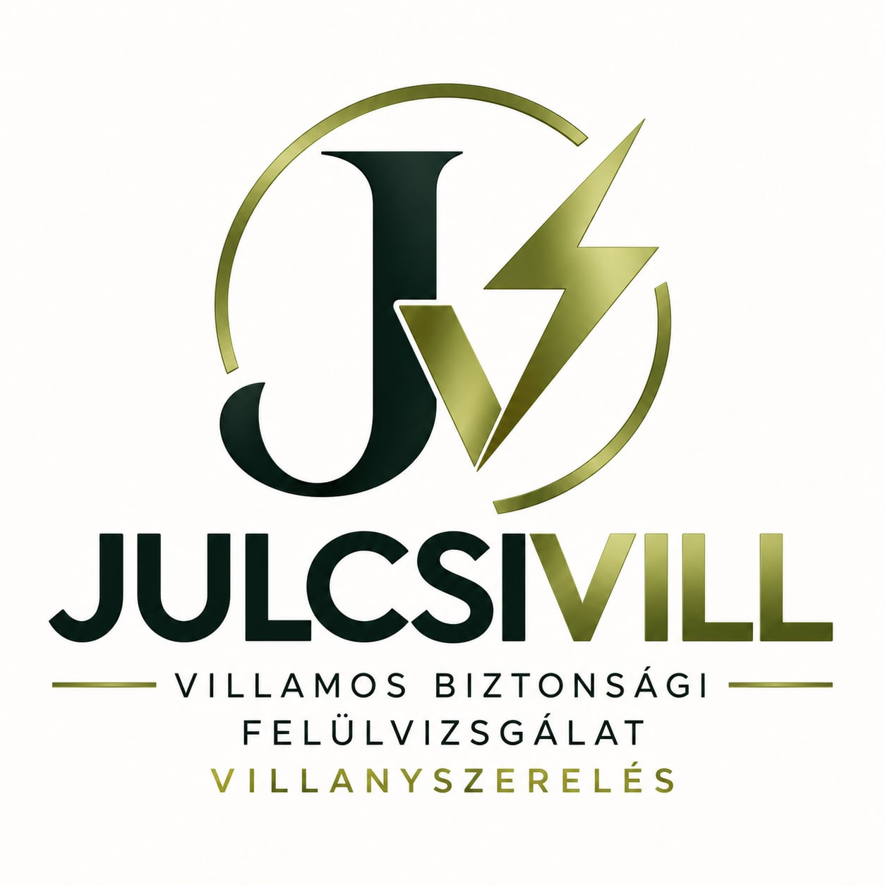

Villamos biztonsági felülvizsgálat
A villamos hálózat műszeres ellenőrzése és a vizsgálat dokumentálása.

06 30 915 6073JULCSIVILL · Varga Júlia
Villamos biztonsági felülvizsgálat és villanyszerelés, érthetően és precízen.
Miskolc és környéke · Tiszaújváros · Eger · Debrecen · Nyíregyháza · Pest megye
RÓLAM
„Igen, én vagyok az, aki miatt ma nem kell találgatnod, biztonságos-e az elektromos hálózatod.”
A JULCSIVILL mögött én állok. Villamos biztonsági felülvizsgálattal és villanyszereléssel foglalkozom.
A munkám során nem találgatok: mérek, ellenőrzök és dokumentálok.
VBF jogosultsággal, villanyszerelői végzettséggel és felelősségbiztosítással dolgozom. A méréseket professzionális Fluke mérőműszerrel végzem.
SZOLGÁLTATÁSOK
A villamos hálózat műszeres ellenőrzése és a vizsgálat dokumentálása.
Villamos javítások, kiépítések és egyéb villanyszerelési munkák.
Felülvizsgálat és villamos munkák magáningatlanokban.
Vállalkozások és üzleti célú ingatlanok villamos ellenőrzése.
Egyeztetett helyszíni felülvizsgálat társasházi környezetben.
Legyen képed arról, milyen állapotban van az ingatlan villamos hálózata.
Villamos biztonsági állapotfelmérés és a szükséges dokumentáció.
MIÉRT JULCSIVILL?
A felülvizsgálatokat szakmai jogosultsággal végzem.
A mérés mögött gyakorlati villamos szakmai tudás is van.
Professzionális mérőműszerrel végzett mérések.
Felelősségbiztosítással végzem a munkámat.
HOGYAN ZAJLIK?
Telefonon vagy e-mailben megbeszéljük, mire van szükséged.
Elvégzem a szükséges ellenőrzéseket és méréseket.
A vizsgálat eredményeit a megfelelő dokumentációban rögzítem.
KAPCSOLAT
Írj vagy hívj, és egyeztetjük a részleteket.